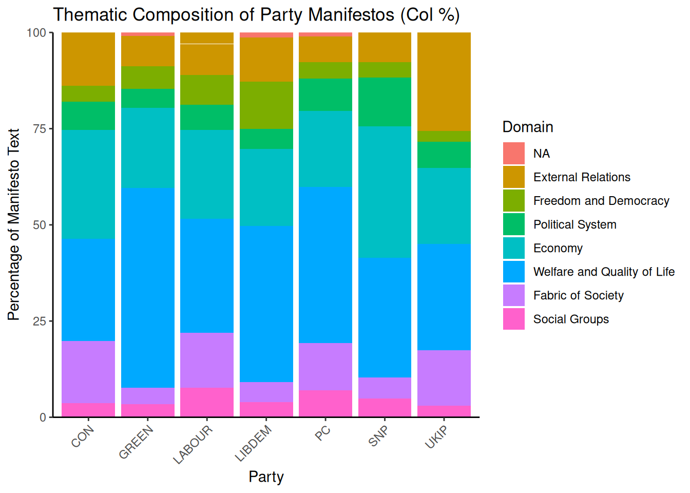
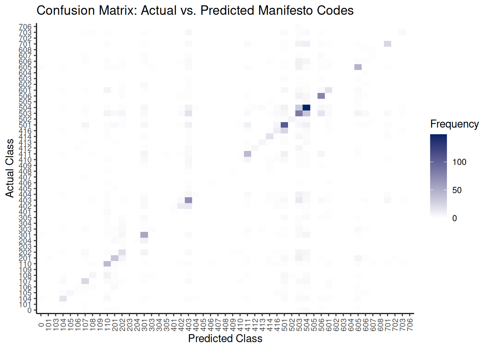

Chapter 8 Supervised Methods
While with scaling we try to place our texts on a scale, with supervised methods we go back to what we did with dictionary analysis: classification. Within quanteda there are many different models for supervised methods, of which we will cover two. These are Support Vector Machines (SVM) and Naive Bayes (NB). The first classifies texts by looking at their position on a hyperplane, the second by their (Bayesian) probabilities.
8.1 Support Vector Machines
To show how SVM works, we will look at an example of SVM in quanteda and one in RTextTools, and an example of NB in quanteda.
8.1.1 SVM with RTextTools
For the SVM, we will start with an example using our Twitter data and the RTextTools package. First, we load the Twitter data:
library("RTextTools")
library("car")
urlfile = "https://raw.githubusercontent.com/SCJBruinsma/qta-files/master/Tweets.csv"
tweets <- read.csv(url(urlfile))
tweets$text <- gsub("http.*","", tweets$text)
tweets$text <- gsub("https.*","", tweets$text)
tweets$text <- gsub("\\$", "", tweets$text)
tweets$text <- gsub("@\\w+", "", tweets$text)
tweets$text <- gsub("[[:punct:]]", "", tweets$text)
tweets$text <- gsub("[ |\t]{2,}", "", tweets$text)
tweets$text <- gsub("^ ", "", tweets$text)
tweets$text <- gsub(" $", "", tweets$text)
tweets$text <- gsub("RT", "", tweets$text)
tweets$text <- gsub("href", "", tweets$text)
labels <- tweets$airline_sentiment
labels <- car::recode(labels, "'positive'=1;'negative'=-1;'neutral'=0")The goal of the supervised learning task is to use part of this dataset to train a certain algorithm and then use the trained algorithm to assign categories to the remaining sentences. Since we know the coded categories for the remaining sentences, we will be able to evaluate how well this training was in guessing/estimating what the codes for these sentences were. We start by creating a document term matrix;
doc_matrix <- create_matrix(tweets$text,
language = "english",
removeNumbers = TRUE,
stemWords = TRUE,
removeSparseTerms = 0.998)
doc_matrix## <<DocumentTermMatrix (documents: 14640, terms: 694)>>
## Non-/sparse entries: 84547/10075613
## Sparsity : 99%
## Maximal term length: 18
## Weighting : term frequency (tf)Note that RTextTools gives you plenty of options in preprocessing. Apart from the options used above, we can also strip whitespace, remove punctuation, and remove stopwords. Stemming and stopword removal is language-specific, so when we select the language in the option above (language=''english''), RTextTools will carry this out according to our language of choice. As of now, the package supports Danish, Dutch, English, Finnish, French, German, Italian, Norwegian, Portuguese, Russian, Spanish, and Swedish.
We then create a container parsing the document matrix into a training set, and a test set. We will use the training set will to train the algorithm and the test set to test how well this algorithm was trained. The following command instructs R to use the first 4000 sentences for the training set the remaining 449 sentences for the test set. Moreover, we specify to append to the document matrix the variable that contains the assigned coders:
container <- create_container(doc_matrix,
labels,
trainSize = 1:10000,
testSize = 10001:14640,
virgin = FALSE)We can then train a model using one of the available algorithms. For instance, we can use the Support Vector Machines algorithm (SVM) as follows:
SVM <- train_model(container, "SVM")Other algorithms are available if you change the SVM option. Options exist for Lasso and Elastic-Net Regularized Generalized Linear Models (GLMNET), maximum entropy (MAXENT), scaled linear discriminant analysis (SLDA), bagging (BAGGING), boosting (BOOSTING), random forests (RF), neural networks (NNET), or classification trees (TREE).
We then use the model we trained to classify the texts in the test set. The following command instructs R to classify the documents in the test set of the container using the SVM model that we trained earlier.
SVM_CLASSIFY <- classify_model(container, SVM)We can also view the classification that the SVM model performed as follows. The first column corresponds to the label that coders assigned to each of the tweets in the training set. The second column then gives the probability that the SVM algorithm assigned to that particular category. As you can see, while the probability for some sentences is quite high, for others it is quite low. This even while the classification always chooses the category with the highest probability.
head(SVM_CLASSIFY)The next step is to check the classification performance of our model. To do this, we first request a function that returns a container with different summaries. For instance, we can request summaries based on the labels attached to the sentences, the documents (or in this case, the sentences) by label, or based on the algorithm.
analytics <- create_analytics(container, SVM_CLASSIFY)
summary(analytics)## ENSEMBLE SUMMARY
##
## n-ENSEMBLE COVERAGE n-ENSEMBLE RECALL
## n >= 1 1 0.8
##
##
## ALGORITHM PERFORMANCE
##
## SVM_PRECISION SVM_RECALL SVM_FSCORE
## 0.6800000 0.6733333 0.6733333Here, precision gives the proportion of bills that SVM classified as belonging to a category that does belong to that category (true positives) to all the bills that are classified in that category (irrespective of where they belong). Recall, then, is the proportion of bills that SVM classifies as belonging to a category and belong to this category (true positives) to all the bills that belong to this category (true positives plus false negatives). The F score is a weighted average between precision and recall ranging from 0 to 1.
Finally, we can compare the scores between the labels given by the coders and those based on our SVM:
compare <- as.data.frame(cbind(labels[10001:14640], SVM_CLASSIFY$SVM_LABEL))
table(compare)## V2
## V1 -1 0 1
## -1 3013 296 110
## 0 289 347 55
## 1 131 59 3408.1.2 SVM with Quanteda
Instead of using a separate package, we can also use quanteda to carry out an SVM. For this, we load some movie reviews, select 1000 of them at random, and place them into our corpus:
set.seed(42)
library(quanteda)
library(quanteda.classifiers)
corpus_reviews <- corpus_sample(data_corpus_LMRD, 1000)Our aim here will be to see how well the SVM algorithm can predict the rating of the reviews. To do this, we first have to create a new variable prediction. This variable contains the same scores as the original rating. Then, we remove 30% of the scores and replace them with NA. We do so by creating a missing variable that contains 30% 0s and 70% 1s. We then place the 0s with NAs. These NA scores are then the ones we want the algorithm to predict. Finally, we add the new variable to the corpus:
prediction <- corpus_reviews$rating
missing <- rbinom(1000, 1, 0.7)
prediction[missing == 0] <- NA
docvars(corpus_reviews, "prediction") <- predictionWe then transform the corpus into a data frame, and also remove stopwords, numbers and punctuation:
data_reviews_tokens <- tokens(
corpus_reviews,
what = "word",
remove_punct = TRUE,
remove_symbols = TRUE,
remove_numbers = TRUE,
remove_url = TRUE,
remove_separators = TRUE,
split_hyphens = FALSE,
include_docvars = TRUE,
padding = FALSE,
verbose = TRUE
)
data_reviews_tokens <- tokens_tolower(data_reviews_tokens, keep_acronyms = FALSE)
data_reviews_tokens <- tokens_select(data_reviews_tokens, stopwords("english"), selection = "remove")
dfm_reviews <- dfm(data_reviews_tokens)Now we can run the SVM algorithm. To do so, we tell the model on which dfm we want to run our model, and which variable contains the scores to train the algorithm. Here, this is our prediction variable with the missing data:
library(quanteda.textmodels)
svm_reviews <- textmodel_svm(dfm_reviews, y = docvars(dfm_reviews, "prediction"))
svm_reviews##
## Call:
## textmodel_svm.dfm(x = dfm_reviews, y = docvars(dfm_reviews, "prediction"))
##
## 672 training documents; 121,608 fitted features.
## Method: L2-regularized L2-loss support vector classification dual (L2R_L2LOSS_SVC_DUAL)Here we see that the algorithm used 672 texts to train the model (the one with a score) and fitted 133,728 features. The latter refers to the total number of words in the training texts and not only the unique ones. Now we can use this model to predict the ratings we removed earlier:
svm_predict <- predict(svm_reviews)While we can of course look at the resulting numbers, we can also place them in a two-way table with the actual rating, to see how well the algorithm did:
rating <- corpus_reviews$rating
table_data <- as.data.frame(cbind(svm_predict, rating))
table(table_data$svm_predict,table_data$rating)##
## 1 2 3 4 7 8 9 10
## 1 172 15 9 15 4 3 3 3
## 2 7 69 6 5 2 2 1 3
## 3 7 0 82 4 1 3 0 1
## 4 5 2 5 86 7 6 0 4
## 7 3 1 1 1 56 3 3 2
## 8 0 2 2 2 8 90 7 6
## 9 4 0 0 3 6 9 76 13
## 10 5 2 4 2 7 6 6 138Here, the table shows the prediction of the algorithm from top to bottom and the original rating from left to right. What we want is that all cases are on the diagonal: in that case, the prediction is the same as the original rating. Here, this happens in the majority of cases. Also, only in a few cases is the algorithm far off.
8.2 Naive Bayes
For the Naive Bayes example, we will use data from the Manifesto Project (Volkens et al., 2019), also known as the Comparative Manifesto Project (CMP), Manifesto Research Group (MRG), and MARPOR (Manifesto Research on Political Representation)). To use this data, ensure you have signed up and downloaded the API key, loaded the package and set the key:
library(manifestoR)
mp_setapikey("manifesto_apikey.txt")While we can download the whole dataset, as it is rather large, it makes more sense to only download a part of it. Here, we take the manifestos for the United Kingdom in 2015. To tell R we want only these documents, we make a small data frame listing the party and the year we want, and then place this into the mp_corpus command. Note that instead of the names of the parties, the Manifesto Project assigns unique codes to each party. To see which code belongs to which party, see: https://manifesto-project.wzb.eu/down/data/2019a/codebooks/parties_MPDataset_MPDS2019a.pdf. Also, note that the date includes both the year and month of the election:
manifestos <- data.frame(party=c(51320, 51620, 51110, 51421, 51901, 51902, 51951), date=c(201505, 201505, 201505, 201505, 201505, 201505, 201505))
manifesto_corpus <- mp_corpus(manifestos)## Connecting to Manifesto Project DB API... corpus version: 2021-1
## Connecting to Manifesto Project DB API... corpus version: 2021-1For now, we are only interested in the (quasi)-sentences the of the manifestos, the codes the coders gave them, and names of the parties. To make everything more clear, we will take these elements from the corpus, combine them into a new data-frame, and remove all the NA values. We do this because otherwise the data would also include the headers and titles of the document, which do not have any codes assigned to them:
text_51320 <- content(manifesto_corpus[["51320_201505"]])
text_51620 <- content(manifesto_corpus[["51620_201505"]])
text_51110 <- content(manifesto_corpus[["51110_201505"]])
text_51421 <- content(manifesto_corpus[["51421_201505"]])
text_51901 <- content(manifesto_corpus[["51901_201505"]])
text_51902 <- content(manifesto_corpus[["51902_201505"]])
text_51951 <- content(manifesto_corpus[["51951_201505"]])
texts <- c(text_51320,text_51620,text_51110,text_51421,text_51901,text_51902,text_51951)
party_51320 <- rep(51320,length.out=length(text_51320))
party_51620 <- rep(51620,length.out=length(text_51620))
party_51110 <- rep(51110,length.out=length(text_51110))
party_51421 <- rep(51421,length.out=length(text_51421))
party_51901 <- rep(51901,length.out=length(text_51901))
party_51902 <- rep(51902,length.out=length(text_51902))
party_51951 <- rep(51951,length.out=length(text_51951))
party <- c(party_51320,party_51620,party_51110,party_51421,party_51901,party_51902,party_51951)
cmp_code <- codes(manifesto_corpus)
manifesto_data <- data.frame(texts,cmp_code,party)Before we go on, we have to transform the columns in our data-frame. This is because R considers two of them (texts and cmp_code) to be a factor, and also still uses the codes for the party variable. To solve the latter, we first transform party into a factor type, then assign the party names to each of the codes (Conservatives, Labour, Liberal Democrats, SNP, Plaid Cymru, The Greens, and UKIP), and then change the column to character type. We then change the texts column to character and the cmp_code column to numeric. We also create a back-up of our current dfm for later, and finally remove any missing data:
manifesto_data$party <- factor(manifesto_data$party,levels = c(51110, 51320, 51421, 51620, 51901, 51902, 51951), labels = c("GREEN", "LABOUR", "LIBDEM", "CON", "PC", "SNP", "UKIP"))
manifesto_data$party <- as.character(manifesto_data$party)
manifesto_data$texts <- as.character(manifesto_data$texts)
manifesto_data$cmp_code <- as.numeric(as.character(manifesto_data$cmp_code))
manifesto_data_raw <- manifesto_data
manifesto_data <- na.omit(manifesto_data)To get an idea of how much a party owns a code, we can calculate the row percentages. These inform us how much of the appearance of a certain code is due to a single party. To calculate these, we use the prop.table command. Here, the ,1 at the end tells R to look at the rows (no value would give the cell proportions, and 2 would give the column proportions). We then multiply the proportions by 100 to get the percentages. Then, we place the output in a data-frame, and provide some names to the columns using the names command:
prop_row <- as.data.frame((prop.table(table(manifesto_data$cmp_code,manifesto_data$party),1) * 100))
names(prop_row) <- c("Code", "Party", "Percentage")While we can look at the results by looking at the prop_row object, it is clearer to do this in a graph. To build this graph, in the command we first specify the data, the x variable (the codes), the y variable (the percentages), and the filling of the bar (which should be the party colours). These party colours we provide in the next line (in hexadecimal notation). Then we tell ggplot to draw the bar chart and stack the bars on top of each other (the alternative is to dodge, in which R places the bars next to each other). Then, we specify our theme, turn the text for the codes 90 degrees, and move the codes a little bit so they are under their respective bars:
library(ggplot2)
ggplot(data=prop_row, aes(x=Code, y=Percentage, fill=Party)) +
scale_fill_manual("", values = c("#0087DC","#67B437","#DC241F","#FAA61A","#008142","#FDF38E","#780077"))+
geom_bar(stat = "identity", position = "stack") +
scale_y_continuous(expand = c(0,0)) +
theme_classic()+
theme(axis.text.x = element_text(angle = 90))+
theme(axis.text.x = element_text(vjust = 0.40))
Now, we can see that some parties dominate some categories, while for others the spread is more even. For example, UKIP dominates the categories 406 and 407 - dealing with positive and negative mentions of protectionism, while the Conservatives do the same with category 103 (Anti-Imperialism). Note though, that these are percentages. This means that the reason the Conservatives dominate category 103 is as they have two (quasi)-sentences with that category. The others do not have the category at all (702 on Negative Mentioning of Labour Groups has the same issue). Other categories, such as 403 (Market Regulation) and 502 (Positive Mentions of Culture) are way better spread out over all the parties.
Another thing we can look at is what part of a partys manifesto belongs to any of the codes. This can help us answer the question: what are the parties talking about? To see this, we have to calculate the column percentages:
prop_col <- as.data.frame((prop.table(table(manifesto_data$cmp_code,manifesto_data$party), 2) * 100))
names(prop_col) <- c("Code", "Party", "Percentage")If we now type prop_col, we can see what percentage of a party manifesto was about a certain code. Yet, given that there are 57 possible codes, it is more practical to cluster these in some way. Here, we do this using the Domains to which they belonged in the codebook. In total there are 7 domains (https://manifesto-project.wzb.eu/down/papers/handbook_2014_version_5.pdf), and a category that contains the 0 code. To cluster the codes, we make a new variable called Domain. To do so, we first transform the codes into a numeric format, create an empty variable called Domain, and then replace the NA values in this empty category with the name of the domain based on the values in the Code variable. This we do using various operators R uses: >= means greater than and equal to, while <= means smaller than and equal to. Then, we make this new variable into a factor, and sort this factor in the way the codes occur:
prop_col$Code <- as.numeric(as.character(prop_col$Code))
prop_col$Domain <- NA
prop_col$Domain[prop_col$Code >= 101 & prop_col$Code <= 110] <- "External Relations"
prop_col$Domain[prop_col$Code >= 201 & prop_col$Code <= 204] <- "Freedom and Democracy"
prop_col$Domain[prop_col$Code >= 301 & prop_col$Code <= 305] <- "Political System"
prop_col$Domain[prop_col$Code >= 401 & prop_col$Code <= 416] <- "Economy"
prop_col$Domain[prop_col$Code >= 501 & prop_col$Code <= 507] <- "Welfare and Quality of Life"
prop_col$Domain[prop_col$Code >= 601 & prop_col$Code <= 608] <- "Fabric of Society"
prop_col$Domain[prop_col$Code >= 701 & prop_col$Code <= 706] <- "Social Groups"
prop_col$Domain[prop_col$Code == 0] <- "NA"
prop_col$Domain <- as.factor(prop_col$Domain)
prop_col$Domain <- factor(prop_col$Domain,levels(prop_col$Domain)[c(2,4,6,1,8,3,7,5)])We then construct a plot as we did above:
ggplot(data=prop_col, aes(x=Party, y=Percentage, fill=Domain)) +
geom_bar(stat = "identity", position = "stack") +
scale_y_continuous(expand = c(0,0)) +
theme_classic()+
theme(axis.text.x = element_text(angle = 90))+
theme(axis.text.x = element_text(vjust = 0.40))
Here, we see that the Domain of Welfare and Quality of Life was the most dominant in all the manifestos, with the Economy coming second. Also, especially UKIP paid a lot of attention to External Relations, while the Green party paid little attention to the Fabric of Society. In all, this gives us a good idea of what type of data we are dealing with.
Now lets get back to the classification. For this, we need to transform the corpus from the manifestoR package into a corpus for the quanteda package. To do so, we first have to transform the former into a data frame, and then turn it into a corpus. We then look at the first 10 entries:
corpus_data <- mp_corpus(manifestos) %>%
as.data.frame(with.meta=TRUE)
manifesto_corpus <- corpus(corpus_data)
summary(manifesto_corpus, 10)Here, we see that the corpus treats each sentence as a separate document (which is confusing). We can still identify to which party they belong due to the party variable, which shows the party code. The cmp_code variable shows the code assigned to the sentence (here it is all NA as the first sentences have the 0 category). To run the NB, instead of providing our training documents using a vector with NA values, we have to split our data set into a training and a test set. For this, we first generate a string of 8000 random numbers between 0 and 10780 (the total number of sentences). We do so to prevent our training or test set to exist only of sentences from a single party document:
set.seed(42)
id_train <- sample(1:10780, 8000, replace = FALSE)
head(id_train, 10)## [1] 2369 5273 9290 1252 8826 10289 356 7700 3954 10095Then we generate a unique number for each of the 10780 sentences in our corpus. This so we can later match them to the sentences we would like to place in our training set or our test set:
docvars(manifesto_corpus, "id_numeric") <- 1:ndoc(manifesto_corpus)We should now see this new variable id_numeric appear in our corpus. We can now construct our training and test set using these ids. For the training set, the logic is to create a subset of the main corpus and to take only those sentences whose id_numeric is also in id_train. For the test set, we do the same, only now taking only those sentences whose id_numeric is not in id_train (note that the ! mark signifies this). Then, we use the %>% pipe to transform the resulting object via a tokens object into a dfm:
manifesto_train <- corpus_subset(manifesto_corpus, id_numeric %in% id_train) %>%
tokens() %>%
dfm()
manifesto_test <- corpus_subset(manifesto_corpus, !id_numeric %in% id_train) %>%
tokens() %>%
dfm()We then run the model using the textmodel_nb command, and ask it to use as classifiers the codes in the cmp_code variable:
manifesto_nb <- textmodel_nb(manifesto_train, docvars(manifesto_train, "cmp_code"))
summary(manifesto_nb)Notice that this command gives us a prediction of how likely it is that an individual word belongs to a certain code (the estimated feature scores). While this can be interesting, what we want to know here is how good the algorithm was. This is when we move from the training of the model using the training set to the prediction of the test set.
A problem is that Naive Bayes can only use features that were both in the training and the test set. To ensure this happens, we use the dfm_match option, which matches all the features in our dfm to a specified vector of features:
manifesto_matched <- dfm_match(manifesto_test, features = featnames(manifesto_train))If we look at this new corpus we see that little has changed (there are still 2780 features). This means that all features that were in the test set were also there in the training set. This is good news as this means the algorithm has all the information needed for a good prediction. Yet, the lower the number of sentences, the less likely this is to occur, so matching is always a good idea.
Now we can predict the missing codes in the test set (now the manifesto_matched dfm) using the model we trained earlier. The resulting classes are what the model predicts (we already set this when we trained the model). If we would then open the predicted_class object we can see to which code R assigned each sentence. Yet, as before, this is a little too much information. Moreover, we do not want to know what the model assigned the sentence to, but how this corresponds to the original code. To see this, we take the actual classes from the manifesto_matched dfm and place them with the predicted classes into a cross table:
predicted_class <- predict(manifesto_nb, newdata = manifesto_matched)
actual_class <- docvars(manifesto_matched, "cmp_code")
table_class <- table(actual_class, predicted_class)
table_classWhile this is already better (we have to pay attention to the diagonal), the large number of codes still makes this hard to read. So, as before, we can better visualise these results - here with the help of a heatmap. To do this, we first transform our table into a data frame that gives us all the possible combinations of codes and their occurrence. We put this into the command and also use a scaling gradient that gets darker when the value in a cell is higher:
table_class <- as.data.frame(table_class)
ggplot(data = table_class, aes(x = predicted_class, y = actual_class)) +
geom_tile(aes(fill = Freq)) +
scale_fill_gradient(high = "black", low = "white", name="Value")+
xlab("Predicted Class")+
ylab("Actual Class")+
scale_y_discrete(expand = c(0,0)) +
theme_classic()+
theme(axis.text.x = element_text(angle = 90))+
theme(axis.text.x = element_text(vjust = 0.40))
Here, we can see that a high number of cases are on the diagonal, which indicates that the algorithm did a good job. Yet, it also classified a large number of sentences into the 503 and 504 categories, while they belonged to any of the other categories.
Besides this, we can also summarize how good the algorithm is through Krippendorffs \(\alpha\). To do so, we take the predicted codes, transform them from factors to numeric values, and store them in an object. Then, we bind them together with the actual codes and place them into a data frame. Finally, we transpose the data frame (so that rows are now columns) and make it into a matrix:
predict <- as.numeric(as.character(predicted_class))
reliability <- as.data.frame(cbind(actual_class, predict))
reliability_t <- t(reliability)
reliability <- as.matrix(reliability_t)Then, we load the kripp.boot package, and calculate the nominal version of Krippendorffs \(\alpha\), as we are working with nominal codes:
library(kripp.boot)
kripp.boot(reliability, iter = 500, method = "nominal")As an alternative, we can use the DescTools package:
library(DescTools)
KrippAlpha(reliability, method = "nominal")Here we see that the number of subjects was 2780 (the number of sentences in the test set), the number of coders 2 (the actual and the predicted codes), and the value of \(\alpha\) 0.318 with an interval between 0.297 and 0.337. While this might not look particularly encouraging, when we realise that Mikhaylov et al. (2012) estimate the agreement among trained coders by the Manifesto Project to be between 0.350 and 0.400, then 0.305 is quite a good score for a simple model!